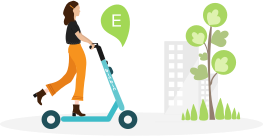
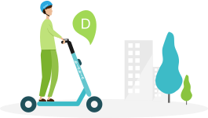
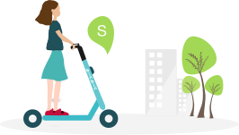

Mod Seçimi ve Kullanımı
Scooter sürüş modunu sürüş öncesi yolculuğuna uygun şekilde ayarla!
0-10 km/s
0-15 km/s
0-25 km/s
Birbirinde 3 sürüş modu bulunur.
Scooter direksiyonundaki kapatma tuşuna 2 kez bastığında bu modları görebilirsin.
Her yeni sürüşe başlarken mod rotana, trafik ve hava durumuna göre karar vererek istersen manuel ya da uygulama üzerinden o sürüşe özel değiştirebilirsin.

ECO Mod hangi sürüş için?
Burada tecrübe, rota, trafik ve hava durumuna göre tercih yapması gerektiğinden bahsedilebilir.

Drive Mod hangi sürüş için?
Burada tecrübe, rota, trafik ve hava durumuna göre tercih yapması gerektiğinden bahsedilebilir.

Drive Mod hangi sürüş için?
Burada tecrübe, rota, trafik ve hava durumuna göre tercih yapması gerektiğinden bahsedilebilir.